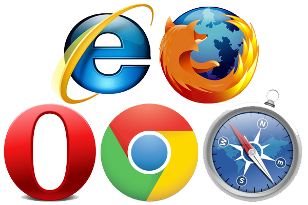

Once you stop learning, you start dying
Web stranice su danas najvažniji način prezentacije tvrtke u svijetu. Dostupnost 24 sata na dan, 7 dana u tjednu čini ih daleko najboljim marketinškim ulaganjem koje možete napraviti. Prilikom izrade web stranica vodimo se najvišim standardima kvalitete i zadovoljstva naših klijenata. Svaka izrada web stranica je jedinstvena i svakom klijentu nudimo originalan web dizajn. Tokom izrade web stranica najveću moguću pozornost posvećujemo i optimizacijama, kako bi Vaša web stranica postigla što je moguće bolje rezultate na pretraživačima.
Skriptni jezici predstavljaju stil programiranja koji je različit od uobičajenih programskih jezika. Njihova je namjena komponiranje programa od gotovih aplikacija - komponenti, njihovim "lijepljenjem". Time se postiže viša razina programiranja i brži razvoj aplikacija. U okviru predmeta ljudi se upoznaju s osobinama i područjima primjene skriptnih jezika. Detaljnije se obrađuje programiranje u okviru ljuske operacijskog sustava, korištenje regularnih izraza, te temeljni Unix alati.
Internetski preglednik (Web preglednik, web browser, Internet browser) je program koji korisniku omogućuje pregled web-stranica i multimedijalnih sadržaja vezanih uz njih.
